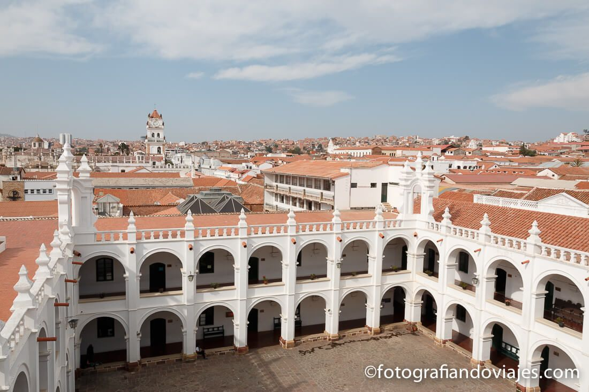
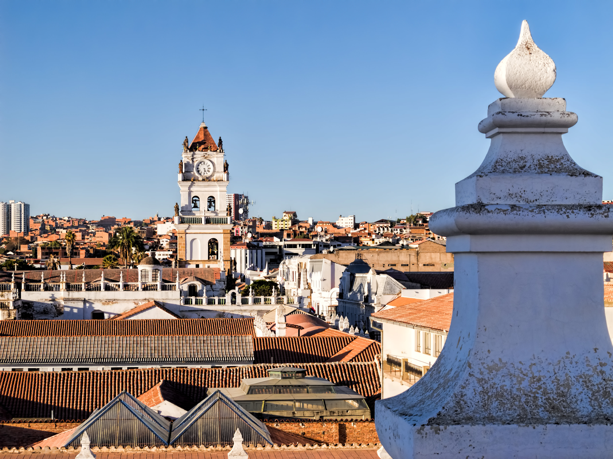
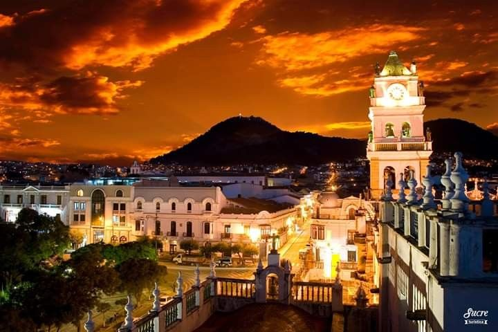
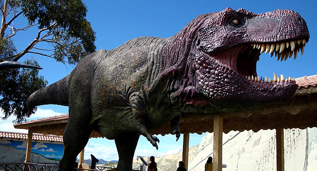

El viaje a Bolivia no podía pasar por alto, la que quizás es la ciudad más bella del país y que fue declarada Patrimonio de la Humanidad en 1991. La ciudad colonial de Sucre es además la capital constitucional de Bolivia y debe su nombre actual a un militar que participó en importantes batallas por la independencia del país. Antes de llamarse Sucre tuvo nombres tan variopintos como Charcas, Chuquisaca o La Plata que fue el nombre que eligieron los españoles al fundarla allá por el año 1538.
A pesar de ser la capital del país es una ciudad muy tranquila y que ha conservado muy bien su centro histórico. Esto se debe a que en realidad solo reside en la ciudad el poder judicial, mientras que el poder legislativo y ejecutivo está en La Paz.
|  |  |
|  |  |